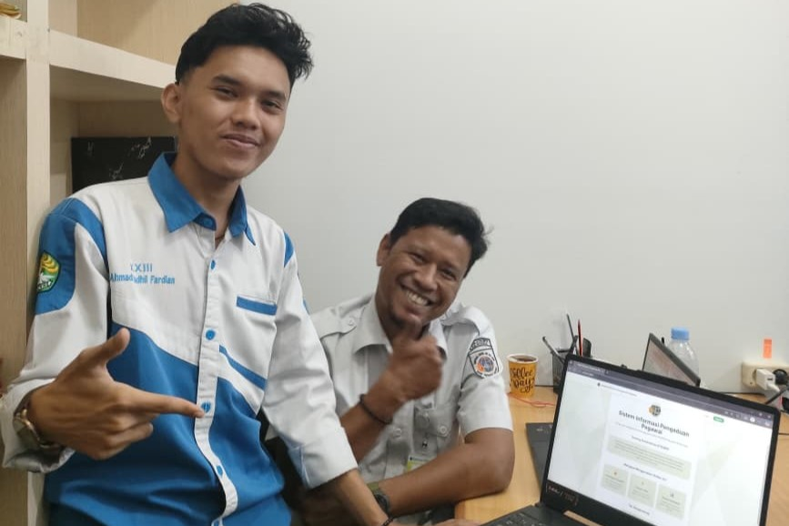
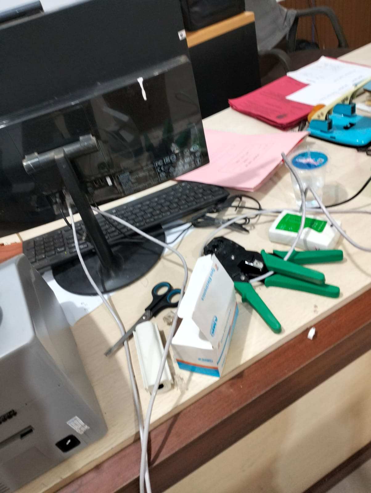
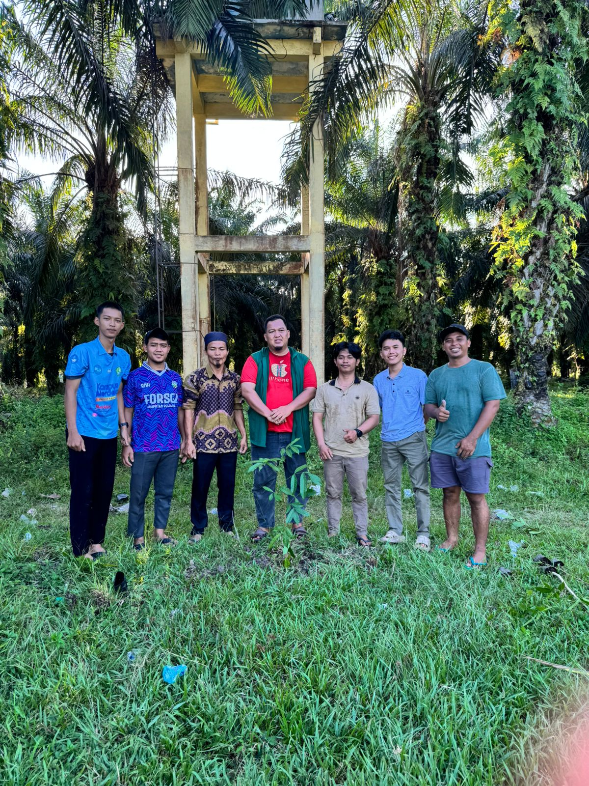
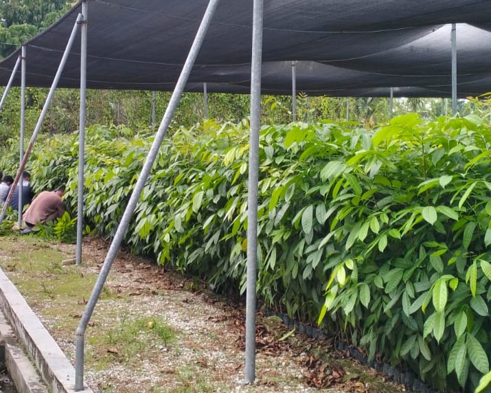
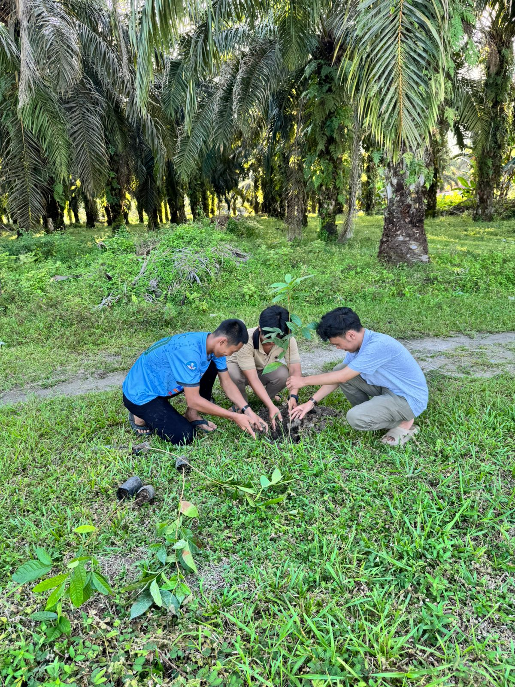

Arsip Dokumentasi & Proyek
Badan Pertanahan Nasional (BPN) Rokan Hulu
Staf Pendukung Administrasi & IT Operasional
- 01. Melakukan pengelolaan, verifikasi, dan pembaruan data operasional menggunakan Microsoft Excel.
- 02. Membantu pemasangan dan penataan kabel jaringan (LAN) untuk mendukung konektivitas komputer area kerja.
- 03. Melakukan pengecekan dasar terhadap koneksi jaringan dan perangkat komputer apabila terjadi kendala.
- 04. Membantu proses administrasi serta distribusi dokumen sesuai prosedur kerja (SOP).
- 05. Berkolaborasi dengan pegawai dalam mendukung kelancaran aktivitas operasional kantor.
- 06. Berpartisipasi dalam perancangan sistem informasi berbasis web sebagai proyek kerja praktik.
Sistem Informasi Manajemen Alur Berkas
Pelacakan dokumen dan alur berkas operasional kantor BPN.
Sistem Pelayanan & Pengaduan (lapor_yuk)
Aplikasi web internal untuk pelaporan dan pengaduan pegawai.

Dokumentasi
Arsip
KERJA PRAKTIK (2025)
IT OPERASIONAL

Dokumentasi
Arsip
KERJA PRAKTIK (2025)
JARINGAN LAN & DATA

Dokumentasi
Arsip
KERJA PRAKTIK (2025)
ADMINISTRASI & SOP
Green Policing Desa Langkan
Aksi Penghijauan & Pelestarian Lingkungan
Berpartisipasi dalam aksi kepedulian lingkungan dan penghijauan di Desa Langkan melalui program Green Policing untuk membangun kesadaran pelestarian ekosistem dan keberlanjutan lingkungan.

Arsip Hijau
GREEN POLICING (2026)
AKSI PENGHIJAUAN

Arsip Hijau
GREEN POLICING (2026)
PELESTARIAN LINGKUNGAN

Arsip Hijau
GREEN POLICING (2026)
KEBERLANJUTAN EKOSISTEM